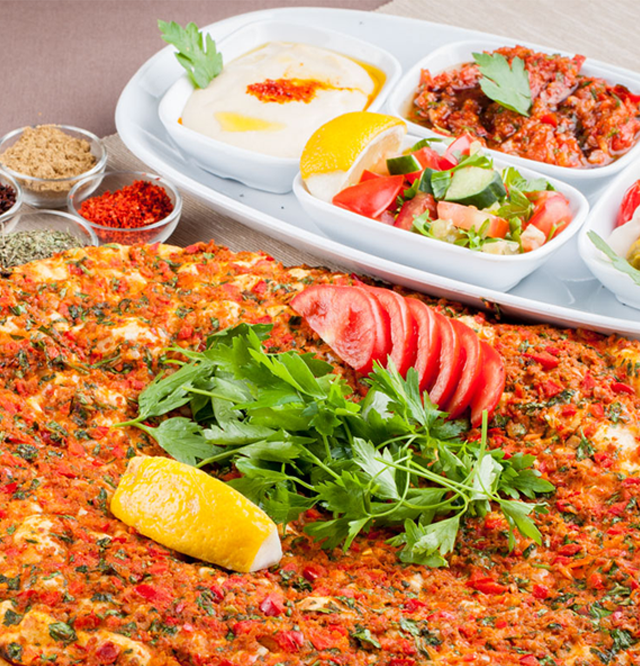

<ion-view title="">
  <ion-nav-bar class="bar-orange" align-title="center" >
    <ion-nav-back-button>
    </ion-nav-back-button>
    <ion-nav-title>
      
    </ion-nav-title>
  </ion-nav-bar>


  <ion-content padding="false" class="food-card" has-bouncing="false" on-swipe-right="$ionicGoBack()">
    <div class="frame">
      
      <span class="food-name">{{vm.food.name}}</span>
    </div>


    <div class="food-button-group">
      <button class="button button-orange food-button" ng-click="vm.selectFood(vm.food.id)">
        SENİ SEÇTİM
      </button>
      <button class="button button-green food-button" ng-click="vm.change()">
        BAŞKA NE VAR?
      </button>
    </div>
  </ion-content>
</ion-view>
